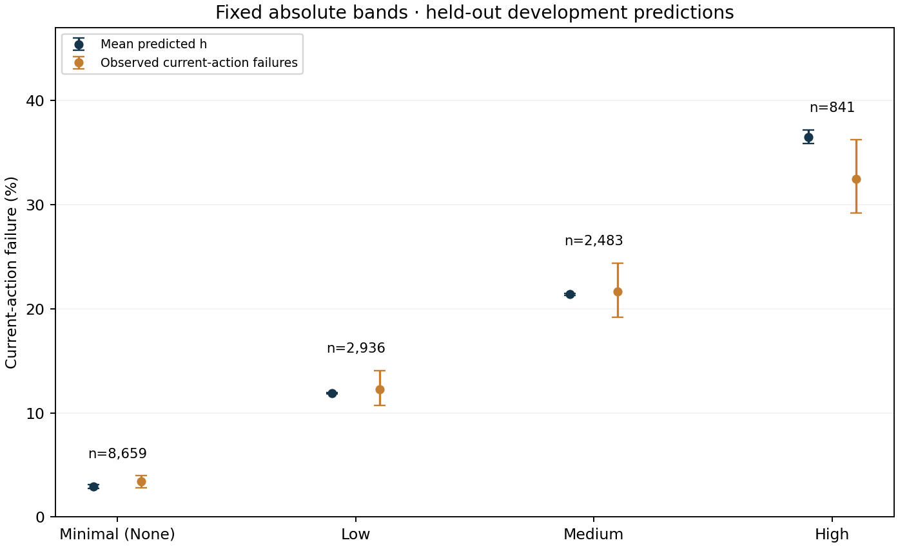
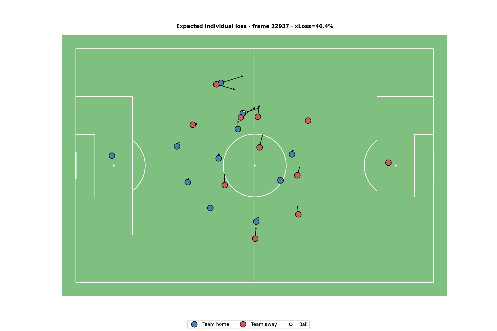
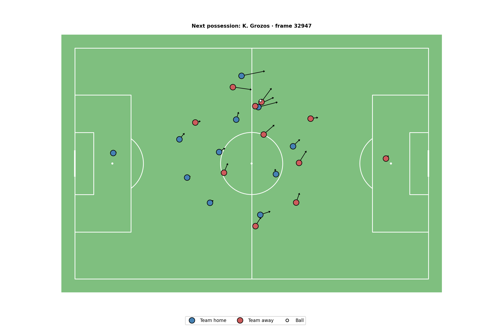

from pathlib import Path
import os
import pandas as pd
import matplotlib.pyplot as plt
import jax
jax.config.update("jax_enable_x64", True)
from PRESS import PRESS
opendata = Path(os.environ.get("SKILLCORNER_OPENDATA", Path.cwd().parent / "opendata"))
match_dir = opendata / "data/matches/1886347"
press = PRESS.from_skillcorner(match_dir)
frame_id = 32937
# Observed context: getters resolve the frame and possession annotations.
frame = press.get_frame(frame_id).iloc[0]
context = press.get_frame_context(frame_id)
match_clock_min = pd.to_timedelta(frame.timestamp).total_seconds() / 60
# Score is absent from these tracking rows: read the current possession's
# dynamical event rather than inserting a constant in the model call.
possessions = press.get_player_possessions()
current_possession = possessions.loc[
possessions.frame_start.le(frame_id) & possessions.frame_end.ge(frame_id)
].iloc[0]
events = pd.read_csv(
opendata / "data/matches" / match_dir.name / f"{match_dir.name}_dynamic_events.csv",
low_memory=False,
)
origin = events.loc[
events.event_type.eq("player_possession")
& events.event_id.eq(current_possession.possession_id)
].iloc[0]
score_difference = float(origin.team_score - origin.opponent_team_score)
from PRESS.model import PassSelectionModel
xT_grid = PassSelectionModel.pretrained().xt_grid
result = press.compute_risk_frame(
frame_id, xT_grid, keep_details=True,
start_type=context["start_type"], previous_action=context["previous_action"],
completed_canonical_drives=context["completed_canonical_drives"],
match_clock_min=match_clock_min, score_difference_prefix=score_difference,
)
from PRESS.visualization import plot_frame
from PRESS.utils.possession import hazard_to_band
h = result["HAZARD"]["Hazard"]
fig, ax = plot_frame(press, frame_id, title=f"Next-action hazard · frame {frame_id} · h={h:.1%} · {hazard_to_band(h)}", show=False)
fig.savefig("figures/vignette_06_h_real_pitch.png", dpi=170)
fig.savefig("figures/vignette_06_h_real_pitch.svg")
plt.close(fig)Composed hazard and difficulty bands
PRESS describes the decisions and actions of the ball carrier through separately fitted components: the probability of passing or carrying, the risk of losing the ball in a one-second carry, the destination of a pass and its probability of completion. This page composes them into a single quantity, \(h\), that answers one question: given the current state, how likely is the team to lose the ball during the carrier’s next action? Because \(h\) is a probability, it has an absolute scale, which we divide into four bands. The bands are used in the pressure case studies and player report.
1. Possession as a discrete sequence of actions
PRESS segments a possession into a canonical set of on-ball actions, the segmentation described in Possessions and checkpoints. A player in possession either carries the ball for one second or passes it to a destination \(j\), so the set of actions is
\[\mathcal A_0=\{\mathrm{carry}_{1s},\ \mathrm{pass}(j)\},\]
where a pass runs until its completion. The one-second carry unit is inspired by action-based EPV models (Fernandez, Bornn, and Cervone 2019; Fernandez, Bornn, and Cervone 2021; Stalpaert 2022). Shots are outside the action set.
Along a possession these actions form a sequence in which the team keeps the ball until, at some action, it loses it. A completed pass moves the ball to a teammate, and the sequence continues across successive carriers. Let \(T\) be the number of canonical actions until team possession is lost, and \(s_n\) the game state at the \(n\)-th decision. The probability that the loss occurs at the next action, given that possession has been retained so far, is the discrete hazard
\[h(s_n)=P(T=n+1\mid T>n,\ s_n).\]
This is the quantity that answers the question: how fragile is the possession here? A carrier with free space and safe passing options has a small \(h\), while a carrier whose carry is contested and whose passes are likely to fail has a large one. Defensive pressure acts on both branches at once, since it raises the risk of the carry and of the passes and it changes which action the player is likely to choose, and \(h\) summarizes these effects in a single probability. It is a probability per decision, indexed by actions, and its scale depends on the one-second horizon of the carry.
PRESS builds \(h\) from its components and marginalizes over the average decision-making policy learned from observed play, independently of the action the player actually chose, so \(h\) describes the difficulty of the situation. Local geometry and kinematics enter execution, and passing options and context enter choice. A high value indicates difficult modeled alternatives for an average player in the observed context.
\(h\) is evaluated at the conventional checkpoints of the segmentation, one for each canonical action, and these define the process and all the results of this page. Since the components depend on the current state, \(h\) can also be computed at intermediate tracking frames, which provides descriptive observations of how difficulty evolves within a possession without adding actions.
Context-label meanings and the previous_action convention are defined in the User guide.
2. Mathematical definition
Condition all quantities on the current state \(s\). Four separately fitted PRESS components enter:
- \(q(s)=P(A=\mathrm{pass}\mid s)\) is the probability of passing from the action-selection model, and \(1-q(s)\) the probability of carrying;
- \(d(s)=P(\mathrm{loss\ within\ 1s}\mid A=\mathrm{carry},s)\) is the loss probability of the one-second carry, from the ball-drive risk model;
- \(\pi_j(s)=P(J=j\mid A=\mathrm{pass},s)\) is the probability of destination \(j\), from the pass-destination model;
- \(p_j(s)=P(\mathrm{completion}\mid J=j,A=\mathrm{pass},s)\) is the completion probability of a pass to \(j\), from the pass-probability model.
Averaging pass failure over the destinations gives
\[f(s)=\sum_j \pi_j(s)\,\big(1-p_j(s)\big)=1-\sum_j \pi_j(s)\,p_j(s),\]
and the law of total probability over the two action branches gives
\[\boxed{h(s)=q(s)\,f(s)+\big(1-q(s)\big)\,d(s).}\]
The weighted pass contribution is \(qf\) and the weighted carry contribution is \((1-q)d\), and they add exactly to \(h\). A state can therefore have a high pass risk \(f\) and a low \(h\) when passing is unlikely, and vice versa. The sum \(\sum_j \pi_jp_j\) is the expected pass success of the action-selection features.
The composition is a project derivation, and the terminology follows the conditional failure probability of discrete-time survival analysis (Singer and Willett 2003; Suresh, Severn, and Ghosh 2022).
3. Difficulty bands
The survival interpretation gives \(h\) an intuitive scale. If the current hazard stayed constant over the following actions, the probability of retaining possession for \(n\) more actions would be \((1-h)^n\). The half-life is the number of actions after which this probability falls to 50%,
\[n_{1/2}=\frac{\log(1/2)}{\log(1-h)},\]
so the higher the hazard, the shorter the half-life. It is a reference scale expressed in decisions; since difficulty changes throughout play, it summarizes the current situation as a constant-risk reference.
Inspired by the classification of defensive pressure of SkillCorner (SkillCorner 2026), we define the difficulty bands from this scale. The cutoffs are the values of \(h\) whose half-life is exactly 8, 4 and 2 actions, a geometric sequence in which each half-life is half of the previous one,
\[b_n=1-2^{-1/n},\qquad n=8,4,2.\]
Since \(b_n\approx \ln 2/n\) for small \(b_n\), halving the half-life approximately doubles the hazard, so the cutoffs are approximately equally spaced on a logarithmic scale of risk. This is a project design choice, with thresholds fixed by the half-life construction. The bands are defined on \(h\): they rest on a constant-hazard half-life construction, which requires a per-action risk over a fixed window, whereas xLoss is the probability of reaching an absorbing state, the terminal loss of the individual possession, and accumulates over a variable horizon, so these thresholds are specific to \(h\). The API keeps the labels below.
| Band | \(h\) interval | Constant-risk half-life |
|---|---|---|
| None | \(0\le h<0.082996\) | More than 8 decisions; infinite at \(h=0\) |
| Low | \(0.082996\le h<0.159104\) | \(4<n_{1/2}\le8\) decisions |
| Medium | \(0.159104\le h<0.292893\) | \(2<n_{1/2}\le4\) decisions |
| High | \(0.292893\le h\le1\) | At most 2 decisions |
The code uses the exact cutoffs, and a value on a cutoff enters the higher band. The same construction at \(n=1\) gives a cutoff at \(h=0.5\), which would define a fifth band. Only 36 of the 14,919 held-out states (0.24%) have \(h\ge 0.5\), too few to evaluate a separate band reliably, so High is kept as the highest band.
4. Example
Auckland FC–Newcastle Jets FC: L. Gillion loses possession during the carry following checkpoint 32937, and K. Grozos subsequently takes control.
The package computes \(h\) from the fitted components at a given state.
5. Validation of the bands
The table pools 14,919 canonical held-out action states from the five outer test pairs. The observed target is the failure of the current canonical action.
The band validation retains verified outfield, non-shot individual possessions whose terminal action belongs to the canonical action set. A pass supplies a checkpoint at its release, and a possession ending in a failed carry supplies the checkpoint at the start of the final failed action. Possessions ending in a foul suffered or a clearance have no terminal canonical action and are excluded from this table, which leaves 14,919 states from 7,265 possessions. The pooled metrics of \(h\) and xLoss in the composed-risk benchmark use all 15,085 verified-outcome checkpoints, including the earlier carry checkpoints of these possessions.
Along the canonical sequence, the corresponding model-implied survival profile is \(\widehat S_n=\prod_{k=0}^{n-1}[1-h(s_k)]\). Intermediate tracking snapshots add no actions or survival factors, while \(h\) remains computable from any usable current state.
| Band | Actions | Mean predicted \(h\) (95% interval) | Observed failures (95% interval) |
|---|---|---|---|
| None | 8,659 | 2.93% [2.77%, 3.09%] | 3.40% [2.83%, 3.98%] |
| Low | 2,936 | 11.87% [11.82%, 11.93%] | 12.26% [10.72%, 14.09%] |
| Medium | 2,483 | 21.40% [21.27%, 21.50%] | 21.67% [19.20%, 24.41%] |
| High | 841 | 36.53% [35.88%, 37.21%] | 32.46% [29.19%, 36.27%] |
Observed failure increases monotonically across bands. In None, Low and Medium, mean predicted \(h\) lies within the bootstrap interval of the observed failure frequency. In High, mean predicted \(h\) is somewhat higher than observed (36.53% versus 32.46%), so the band is slightly pessimistic. The paired predicted-minus-observed gap is 4.07 percentage points, with a 95% bootstrap interval of −0.07 to 7.82 points, which includes zero. The result leaves room for improvement through the optimization of the individual tasks, bearing in mind that the band is sparsely populated and its estimate can therefore be noisy.

Error bars are 95% bootstrap intervals that resample whole matches (Efron and Tibshirani 1993), because actions within a match are dependent. They describe between-match variability in this sample, conditional on fixed predictions, and with ten matches the 95% level is indicative. The composed-risk benchmark gives the bootstrap procedure and reports pooled metrics and calibration on the respective \(h\) and xLoss cohorts. The probabilities of \(h\) are used without post-hoc calibration.
6. Extension to xLoss
The same Auckland FC–Newcastle Jets FC possession ends with L. Gillion losing the ball and K. Grozos starting the next individual possession.
\(h\) concerns the next action. A complementary question concerns the eventual outcome of the current ball carrier’s individual possession, which can extend beyond the next action. The distinction arises from the carry: a successful one-second carry preserves the individual possession but does not determine its outcome, since the player may keep carrying, pass or lose the ball later, while a successful pass ends the individual possession without a loss of team possession.
The residual-risk model accounts for this longer horizon with the residual risk
\[r(s)=P(\text{eventual individual possession loss}\mid s,\ \text{successful carry}).\]
Along the carry branch, the probability of an eventual loss combines the loss during the carry with the residual risk after its success, \(d(s)+(1-d(s))\,r(s)\). Marginalizing over the same average decision-making policy as \(h\) gives the expected loss
\[\boxed{\mathrm{xLoss}(s)=\big(1-q(s)\big)\big[d(s)+\big(1-d(s)\big)r(s)\big]+q(s)\,f(s),}\]
or equivalently
\[\mathrm{xLoss}(s)=h(s)+\big(1-q(s)\big)\big(1-d(s)\big)\,r(s).\]
The additional term is the probability of a successful carry followed by an eventual loss of the individual possession. xLoss incorporates this longer horizon through \(r(s)\), which absorbs the subsequent decisions into a single probability.
The two quantities are complementary. \(h\) characterizes the immediate difficulty of the situation and supports the difficulty bands, and xLoss estimates the probability that the current individual possession ends in a loss. Both are evaluated under the average decision-making policy, independently of the action actually performed.
area = press.get_bcos_result(frame_id)["BCOS area"]
from PRESS.model import ActionSelectionModel, ResidualRiskModel
state = press.get_state(frame_id)
context = press.get_frame_context(frame_id)
field = result["PPCF"]
action_model = ActionSelectionModel.pretrained()
residual_model = ResidualRiskModel.pretrained()
time_since_start = press.get_elapsed_time(frame_id)
features = residual_model.build_features(
action_model=action_model, time_since_start=time_since_start,
x_bc=state["x_bc"], v_bc=state["v_bc"],
r_atts=state["r_atts"], r_defs=state["r_defs"],
attacking_side=state["attacking_side"], targets=field["grid"],
pass_selection_probabilities=field["Pass selection probabilities"],
pass_success_probability=field["Pass probability"],
bcos=area, ball_drive_loss=result["BALL_DRIVE_RISK"]["Ball drive risk"],
start_type_raw=context["start_type"], previous_action_raw=context["previous_action"],
match_clock_min=match_clock_min, score_difference_prefix=score_difference,
completed_canonical_drives=context["completed_canonical_drives"],
pitch_length=state["pitch_length"], pitch_width=state["pitch_width"],
)
r = float(residual_model.predict_features(features)[0])
q = result["ACTION_SELECTION"]["Pass probability"]
d = result["BALL_DRIVE_RISK"]["Ball drive risk"]
xloss = h + (1 - q) * (1 - d) * r
fig, ax = plot_frame(press, frame_id, title=f"Expected individual loss · frame {frame_id} · xLoss={xloss:.1%}", show=False)
fig.savefig("figures/vignette_06_xloss_real_pitch.png", dpi=170)
fig.savefig("figures/vignette_06_xloss_real_pitch.svg")
plt.close(fig)
from PRESS.visualization import plot_frame
next_frame = 32947
fig, ax = plot_frame(press, next_frame, title="Next possession: K. Grozos · frame 32947", show=False)
fig.savefig("figures/vignette_06_xloss_next_pitch.png", dpi=170)
fig.savefig("figures/vignette_06_xloss_next_pitch.svg")
plt.close(fig)
The metrics, calibration and conventions of \(h\) and xLoss are reported in the composed-risk benchmark.
References
Efron, Bradley, and Robert J. Tibshirani. 1993. An Introduction to the Bootstrap. Chapman; Hall. https://doi.org/10.1007/978-1-4899-4541-9.
Fernandez, Javier, Luke Bornn, and Dan Cervone. 2019. “Decomposing the Immeasurable Sport: A Deep Learning Expected Possession Value Framework for Soccer.” In MIT Sloan Sports Analytics Conference. https://www.sloansportsconference.com/research-papers/decomposing-the-immeasurable-sport-a-deep-learning-expected-possession-value-framework-for-soccer.
Fernandez, Javier, Luke Bornn, and Daniel Cervone. 2021. “A Framework for the Fine-Grained Evaluation of the Instantaneous Expected Value of Soccer Possessions.” Machine Learning 110: 1389–1427. https://doi.org/10.1007/s10994-021-05989-6.
Singer, Judith D., and John B. Willett. 2003. Applied Longitudinal Data Analysis: Modeling Change and Event Occurrence. Oxford University Press.
SkillCorner. 2026. “Introducing SkillCorner’s New Pressure Metrics.” https://skillcorner.com/us/articles/introducing-skillcorners-new-pressure-metrics.
Stalpaert, Louis. 2022. “CounterRisk: Predicting Counter-Attacks, Even If They Don’t Occur.” Master’s thesis, KU Leuven. https://belgianfootball.s3.eu-central-1.amazonaws.com/s3fs-public/rbfa/docs/pdf/rbfa_knowledge_centre/studies/RBFA_Study_30_Counter_Risk.pdf.
Suresh, Krithika, Cameron Severn, and Debashis Ghosh. 2022. “Survival Prediction Models: An Introduction to Discrete-Time Modeling.” BMC Medical Research Methodology 22: 207. https://doi.org/10.1186/s12874-022-01679-6.